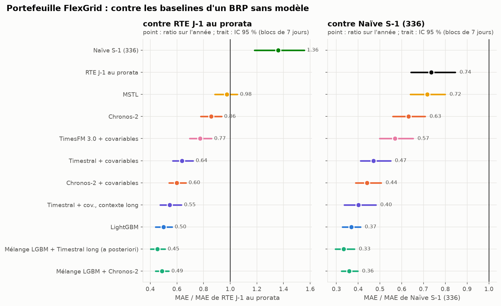

FlexGrid · nomination J-1
Un responsable d’équilibre (BRP) fictif, FlexGrid Énergie, doit nommer chaque veille, au pas 30 min, la consommation de son portefeuille (~800 GWh/an de sites tertiaires). Ce dépôt construit, évalue et met en service cette prévision sur des données publiques réelles. Il applique la veille W25 (quand un modèle de fondation zero-shot bat-il un spécialiste réajusté ?) et la méthode décrite dans « Claude Code : la méthode révisée ».
Le brief est plan_flexgrid.md. Les décisions prises avant d’écrire du code sont dans SPEC.md. Le protocole d’évaluation, figé avant le premier calcul, est dans configs/protocol.yaml. Les écarts et les corrections sont dans IMPLEMENTATION_NOTES.md. Le rapport complet est publié sur https://gwils28.github.io/flexgrid_dayahead/.
Les réponses, en bref
Année de test : 365 jours de livraison, du 1er juillet 2025 au 30 juin 2026, avec une prévision émise chaque veille à 9 h et uniquement des informations disponibles à cette heure-là (météo prévue, pas observée).
| Question du brief | Réponse | Où |
|---|---|---|
| Battre la prévision J-1 de RTE ? | Oui sur la prévision publiée : le mélange LightGBM + Chronos-2 a un MAE de 897 MW contre 1 401 (ratio 0,64, IC 95 % [0,56 ; 0,73]). Non contre RTE débiaisée : une correction de biais d’une ligne donne 816 MW ; le mélange ne fait pas mieux (1,10 [0,99 ; 1,22]), et perd sous l’autre lecture du quart d’heure (1,14 [1,02 ; 1,26]) | 02_backtest |
| Le MAPE du portefeuille ? | 2,7 % pour le mélange, contre 5,6 % pour RTE ramenée au portefeuille et 7,5 % pour la naïve hebdomadaire. Les 6 % du brief sont ceux d’une méthode sans modèle | 02_backtest |
| Le gain en € ? | Contre RTE au prorata : 1,24 M€/an évités sous la définition du brief (volume × prix, IC 95 % [0,93 ; 1,56]), soit 0,12 à 0,62 M€/an avec une pénalité réaliste | 04_cout |
| Des quantiles fiables ? | Bruts, non : LightGBM couvre 75 % au lieu de 90 %. Après une réparation conforme, 0,90 à 0,91 sur l’année, avec un retard aux changements de saison | 02_backtest |
| TSFM ou spécialiste ? | LightGBM est meilleur seul ; Chronos-2 + covariables apporte de la diversité. Le mélange des deux bat le meilleur router possible (−6,8 % de MASE contre −1,8 % pour un router oracle) | 03_router |
| Cold-start ? | 7 jours d’historique : la naïve gagne. Dès 14 jours : LightGBM appris sur d’autres régions. Le few-shot in-context de Chronos-2 n’aide pas ; celui de Timestral (addendum) est le seul modèle sous la naïve à 7 jours (5,7 % contre 6,6 % de WAPE, IC qui touche 1) | 03_router |
| Timestral, TimesFM 3.0 (addendum) ? | À contexte égal, ni l’un ni l’autre ne bat Chronos-2 (MAE 1,18 et 1,19 fois au national). Timestral avec deux ans de contexte, si : 990 MW, 0,89 fois Chronos-2, 0,71 fois RTE publiée ; il perd encore contre RTE débiaisée. Le calendrier en covariable aide les jours fériés sans combler l’écart avec LightGBM. Aucun mélange pré-enregistré ne bat le mélange d’origine : le service ne change pas | 02_backtest |
| Mise en production ? | Dagster, MLflow, FastAPI, Docker, en local. La production reproduit le backtest à l’identique quand elle réapprend à la même date. Monitoring rejoué sur l’année de test | 05_production |

Ce qui a changé par rapport au plan
| Plan (brief) | Fait | Pourquoi |
|---|---|---|
| Portefeuille de 5 000 sites + bornes de recharge | Deux segments Enedis réels (3 517 sites tertiaires, 815 GWh/an) ; national éCO2mix pour le benchmark RTE ; 81 segments pour le router | RTE ne prévoit que le national ; aucune donnée publique de bornes au pas 30 min |
| ENTSO-E pour la charge et les prix | éCO2mix + prix day-ahead Energy-Charts ; client ENTSO-E écrit et testé, activé par token | Pas de token ENTSO-E |
| Coût = volume × prix d’écart | Volume × |prix day-ahead| × k, k = 1 (brief) et 0,1-0,5 (pénalité) | Pas de prix d’écart public sans compte |
| Températures départementales | Prévisions météo archivées (ECMWF IFS, émises 48 h avant) pour le verdict ; ERA5 pour l’apprentissage | La température observée est une fuite d’information |
| Battre RTE | Battre RTE et RTE débiaisée, sous deux lectures du quart d’heure | RTE a un biais stable de +1,1 GW depuis 2023 |
| Chronos-2 ou TTM-r3 / PatchTST-FM | Chronos-2, puis Timestral et TimesFM 3.0 par un addendum du 16 octobre 2026 | Un second TSFM n’était ajouté que s’il changeait une conclusion (SPEC) ; deux TSFM sortis après le projet ont été ajoutés à la demande de l’auteur, sous un addendum écrit avant leur première prévision |
| RevIN | Cibles relatives au niveau récent pour LightGBM ; Chronos-2 normalise lui-même | Même effet, sans réseau à entraîner |
| Feature store | Variables recalculées à chaque prévision | Quelques secondes de calcul : un magasin n’apporte rien à cette échelle |
| Benchmark au prorata pour le portefeuille | Ajouté après le protocole, déclaré comme tel | Sans lui, la seule référence du portefeuille était une naïve |
Reproduire
uv sync --extra prod # Python 3.12 ; Chronos-2 tourne sur GPU (un CPU suffit, en beaucoup plus lent)
make data # télécharge et fige les sources (sha256 dans data/MANIFEST.json)
uv run flexgrid build # tables intermédiaires
uv run flexgrid forecast national snaive_day snaive_week mstl ets_seasonal lgbm chronos2 chronos2_cov
uv run flexgrid forecast segments snaive_day snaive_week mstl ets_seasonal lgbm chronos2 chronos2_cov
# addendum : timestral*, timesfm3*, chronos2_wx, *_cov_long (liste dans configs/protocol.yaml)
uv run flexgrid forecast national timestral timestral_wx timestral_cov timesfm3 timesfm3_wx timesfm3_cov ...
uv run flexgrid score national segments && uv run flexgrid tables
uv run flexgrid router && uv run flexgrid coldstart && uv run flexgrid coldstart --addendum
make figures report # figures de tous les blocs, puis le rapport Quarto dans docs/
uv run pytest && uv run ruff check src testsLe backtest complet prend plusieurs heures sur une RTX 5070 et 32 cœurs, dont 4 h 30 pour LightGBM sur le panel (78 réapprentissages hebdomadaires de 7 quantiles sur jusqu’à 4,2 M de lignes). L’addendum ajoute environ 9 h de GPU sur le panel (Timestral et TimesFM 3.0 avec covariables : 1 h 48 et 1 h 57) et 1 h 40 de CPU pour Timestral-5M. Les prévisions brutes ne sont pas versionnées ; les tableaux par origine (results/per_origin_*.parquet) le sont, et tous les tableaux, figures et verdicts en partent.
Organisation
01_donnees/ bloc A : ce que contiennent les sources, figures
02_backtest/ blocs B-C : modèles, backtest, verdicts
03_router/ router et cold-start
04_cout/ du MW à l'euro
05_production/ blocs D-E : service et surveillance
src/flexgrid/ le code (sources, data, backtest, models, prod)
configs/ protocole pré-enregistré, météo, service
results/ tableaux versionnés
report/ rapport Quarto (publié dans docs/)Licences des modèles
Chronos-2 Apache-2.0 ; Timestral, code Apache-2.0 et poids sous licence MIT modifiée ; TimesFM 3.0, poids non commerciaux. Ce dépôt est une veille personnelle sans usage commercial ; un vrai BRP ne pourrait pas servir TimesFM 3.0 sans autre licence.